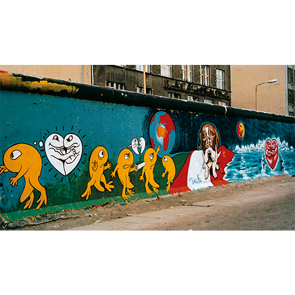
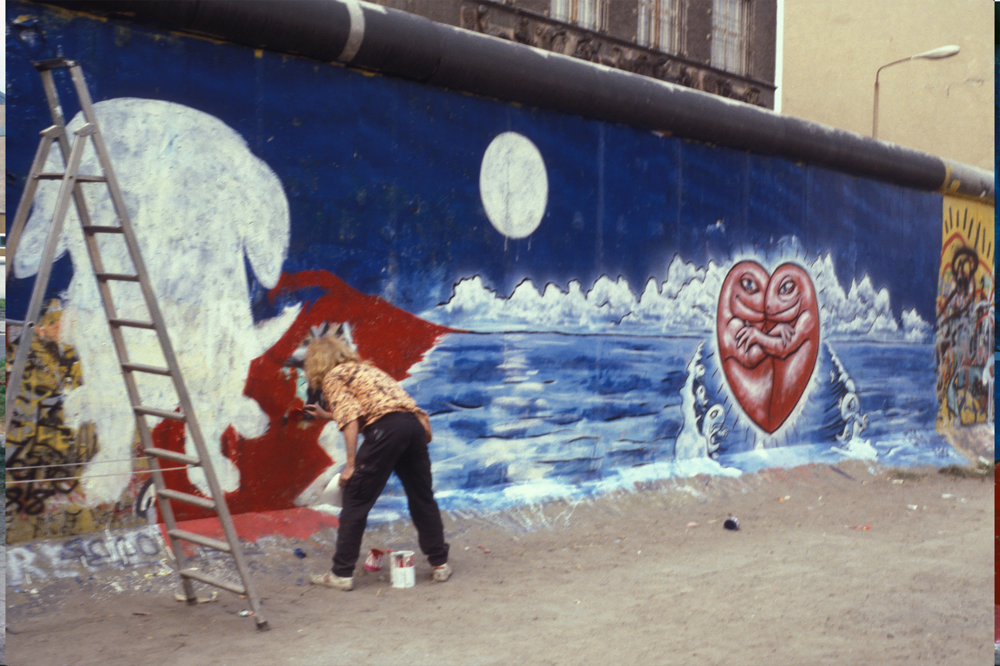
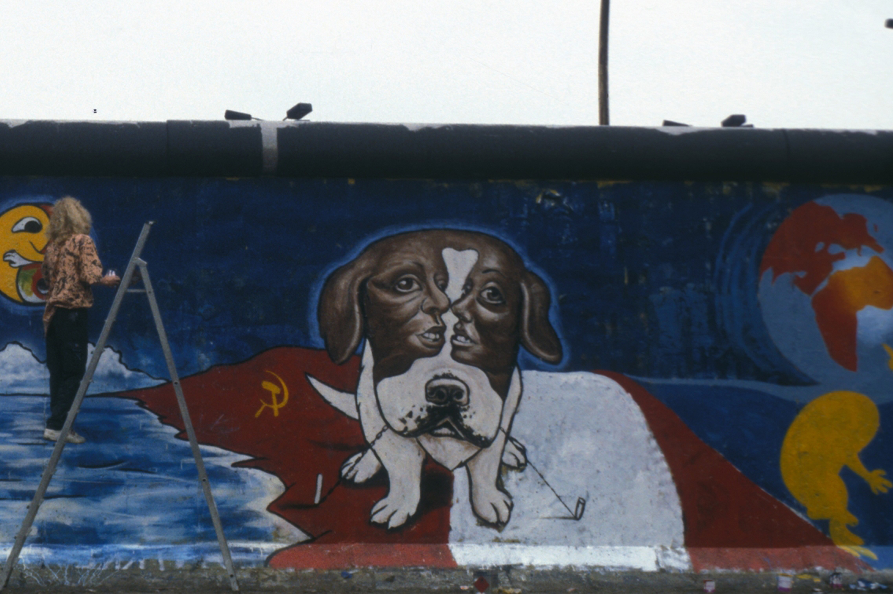
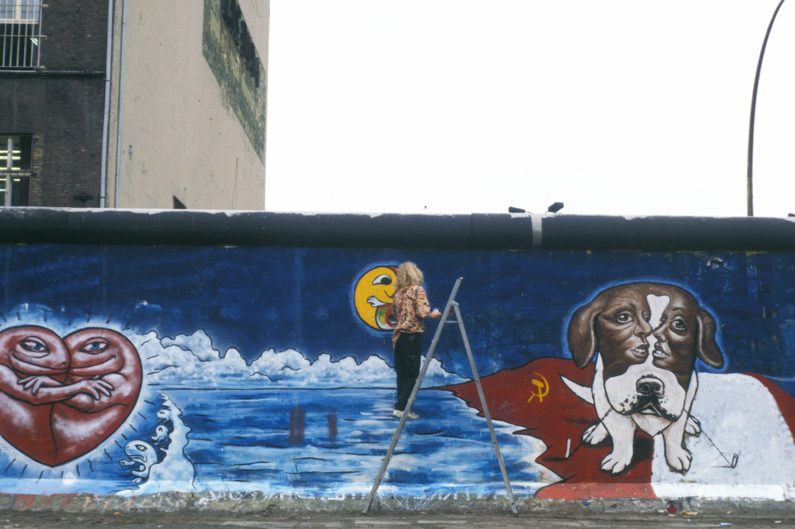
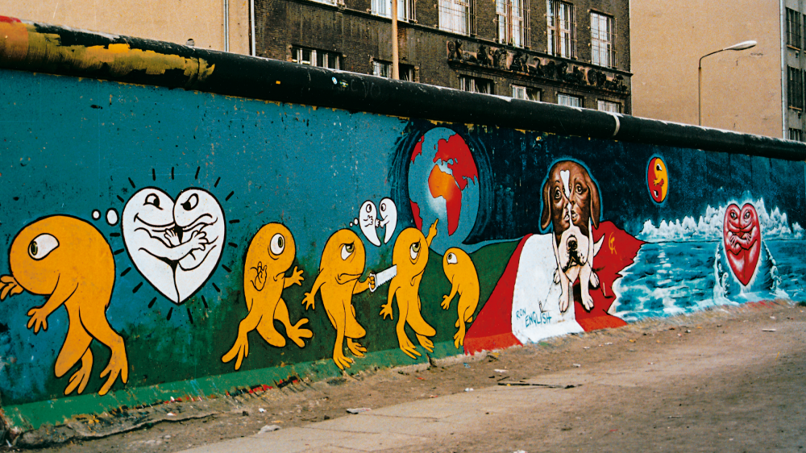

Berlin Wall, 1989
Mural painted on the Berlin Wall at Checkpoint Charlie in 1989, sometimes referred to as Peace on Earth.

Work details
Description
After a show in Amsterdam, Ron English traveled to Berlin and decided to paint the wall at Checkpoint Charlie. The Museum at Checkpoint Charlie supplied paint and a ladder, but the undertaking carried real danger. According to English’s account, the museum director warned him that the wall stood inside East German territory and that the guards might attempt to capture him while he worked.
Over the course of roughly a week and a half, English painted the wall while escaped East German dissidents reportedly kept watch nearby. He began with a heart logo and expanded the mural gradually, responding to conversations with people visiting the site. On the final day, he added figures reacting to the East German police stationed at the checkpoint entrance.
English later described being detained when he attempted to cross into East Berlin carrying newspapers that featured a photograph of him with the mural. After several hours of interrogation, he was expelled for attempting to spread propaganda. When he returned to Berlin two years later, the section of wall he had painted was gone along with the guards, marking the rapid historical shift that followed the wall’s fall.
Gallery



